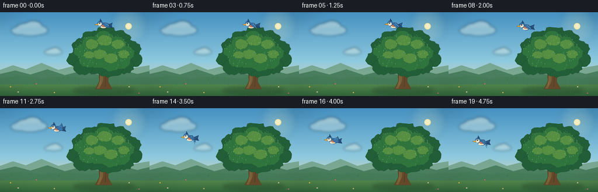
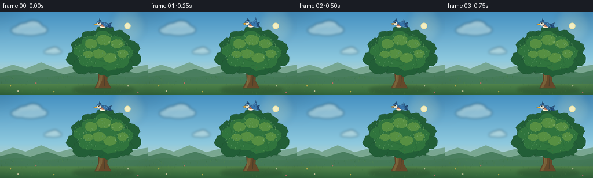

CODING AGENTS AS PIXEL WORLD MODELS
traex/DeepSeek-V4.1-Flash · dynamic_spatial_relationship_0044
点击播放 · 原生 RGB 像素
逐轮保存的候选
回放视频、检查图与代码变化。
每份候选均可单独播放。实际图片检查记录在下方工具轨迹中。
候选 01播放与检查图
点击播放 · 原生 RGB 像素


展开代码变化
--- 上一保存版本
+++ 本次保存版本
@@ -0,0 +1,426 @@
+from __future__ import annotations
+
+import math
+import random
+from pathlib import Path
+
+import cv2
+import numpy as np
+from PIL import Image, ImageDraw, ImageFilter
+
+import artifact_io
+
+
+ROOT = Path(__file__).resolve().parent
+WIDTH = 256
+HEIGHT = 144
+FRAMES = 20
+FPS = 4
+SS = 4
+CW = WIDTH * SS
+CH = HEIGHT * SS
+
+
+def s(value: float) -> int:
+ return int(round(value * SS))
+
+
+def box(x0: float, y0: float, x1: float, y1: float) -> tuple[int, int, int, int]:
+ return (s(x0), s(y0), s(x1), s(y1))
+
+
+def rgba(color: tuple[int, int, int], alpha: int = 255) -> tuple[int, int, int, int]:
+ return color + (alpha,)
+
+
+def lerp(a: float, b: float, t: float) -> float:
+ return a + (b - a) * t
+
+
+def smoothstep(t: float) -> float:
+ t = max(0.0, min(1.0, t))
+ return t * t * (3.0 - 2.0 * t)
+
+
+def make_background() -> Image.Image:
+ y = np.linspace(0.0, 1.0, CH, dtype=np.float32)[:, None]
+ sky_top = np.array([69, 145, 194], dtype=np.float32)
+ sky_mid = np.array([142, 201, 222], dtype=np.float32)
+ sky_low = np.array([244, 224, 176], dtype=np.float32)
+
+ upper = np.clip(y / 0.58, 0.0, 1.0)
+ lower = np.clip((y - 0.58) / 0.42, 0.0, 1.0)
+ sky = sky_top * (1.0 - upper) + sky_mid * upper
+ sky = sky * (1.0 - lower) + sky_low * lower
+ image = np.repeat(sky[:, None, :], CW, axis=1).astype(np.uint8)
+ return Image.fromarray(image, "RGB").convert("RGBA")
+
+
+def add_soft_glow(image: Image.Image) -> None:
+ glow = Image.new("RGBA", image.size, (0, 0, 0, 0))
+ draw = ImageDraw.Draw(glow)
+ cx, cy = s(220), s(24)
+ for radius, alpha in ((31, 18), (22, 28), (15, 42)):
+ draw.ellipse(
+ (cx - s(radius), cy - s(radius), cx + s(radius), cy + s(radius)),
+ fill=rgba((255, 238, 168), alpha),
+ )
+ glow = glow.filter(ImageFilter.GaussianBlur(s(5)))
+ image.alpha_composite(glow)
+
+ disc = Image.new("RGBA", image.size, (0, 0, 0, 0))
+ draw = ImageDraw.Draw(disc)
+ draw.ellipse(box(214.5, 18.5, 225.5, 29.5), fill=rgba((255, 238, 168), 225))
+ draw.ellipse(box(216.0, 19.8, 224.0, 27.8), fill=rgba((255, 247, 199), 235))
+ image.alpha_composite(disc)
+
+
+def add_cloud(image: Image.Image, cx: float, cy: float, scale: float, drift: float) -> None:
+ cloud = Image.new("RGBA", image.size, (0, 0, 0, 0))
+ draw = ImageDraw.Draw(cloud)
+ x = cx + drift
+ blobs = [
+ (-20, 2, 18, 9, 82),
+ (-8, -2, 19, 12, 102),
+ (8, -5, 20, 14, 110),
+ (23, 1, 16, 9, 90),
+ (3, 4, 27, 9, 80),
+ ]
+ for dx, dy, rx, ry, alpha in blobs:
+ draw.ellipse(
+ box(
+ x + dx * scale - rx * scale,
+ cy + dy * scale - ry * scale,
+ x + dx * scale + rx * scale,
+ cy + dy * scale + ry * scale,
+ ),
+ fill=rgba((245, 246, 228), alpha),
+ )
+ cloud = cloud.filter(ImageFilter.GaussianBlur(s(2.2)))
+ image.alpha_composite(cloud)
+
+
+def add_landscape(image: Image.Image) -> None:
+ layer = Image.new("RGBA", image.size, (0, 0, 0, 0))
+ draw = ImageDraw.Draw(layer)
+
+ draw.polygon(
+ [(0, s(99)), (s(22), s(91)), (s(44), s(98)), (s(71), s(87)),
+ (s(100), s(99)), (s(131), s(91)), (s(161), s(99)), (s(192), s(89)),
+ (s(221), s(97)), (s(256), s(91)), (s(256), s(119)), (0, s(119))],
+ fill=rgba((111, 159, 132), 210),
+ )
+ draw.polygon(
+ [(0, s(106)), (s(26), s(100)), (s(52), s(107)), (s(81), s(98)),
+ (s(111), s(108)), (s(143), s(100)), (s(172), s(108)),
+ (s(207), s(99)), (s(235), s(106)), (s(256), s(101)),
+ (s(256), s(124)), (0, s(124))],
+ fill=rgba((67, 121, 88), 240),
+ )
+
+ meadow = Image.new("RGB", image.size)
+ meadow_draw = ImageDraw.Draw(meadow)
+ for yy in range(s(108), CH):
+ t = (yy / SS - 108.0) / 36.0
+ color = (
+ int(lerp(109, 47, t)),
+ int(lerp(159, 99, t)),
+ int(lerp(90, 57, t)),
+ )
+ meadow_draw.line((0, yy, CW, yy), fill=color)
+ mask = Image.new("L", image.size, 0)
+ mask_draw = ImageDraw.Draw(mask)
+ mask_draw.polygon(
+ [(0, s(112)), (s(34), s(109)), (s(72), s(113)), (s(108), s(110)),
+ (s(150), s(113)), (s(190), s(109)), (s(226), s(113)), (s(256), s(110)),
+ (s(256), s(144)), (0, s(144))],
+ fill=255,
+ )
+ image.paste(meadow, (0, 0), mask)
+ image.alpha_composite(layer)
+
+ details = Image.new("RGBA", image.size, (0, 0, 0, 0))
+ d = ImageDraw.Draw(details)
+ rng = random.Random(7)
+ for _ in range(170):
+ x = rng.uniform(2, 254)
+ y = rng.uniform(112, 143)
+ length = rng.uniform(1.0, 3.8)
+ shade = rng.choice([(72, 124, 65), (83, 139, 70), (54, 105, 58)])
+ d.line((s(x), s(y), s(x + rng.uniform(-0.8, 0.8)), s(y - length)),
+ fill=rgba(shade, rng.randint(90, 170)), width=max(1, SS // 2))
+ for x, y, color in [
+ (18, 128, (247, 205, 83)),
+ (31, 137, (246, 235, 196)),
+ (62, 123, (230, 113, 111)),
+ (93, 138, (247, 205, 83)),
+ (221, 128, (245, 238, 203)),
+ (238, 139, (222, 112, 128)),
+ ]:
+ d.ellipse(box(x - 1.0, y - 1.0, x + 1.0, y + 1.0), fill=rgba(color, 225))
+ d.ellipse(box(x - 0.3, y - 0.3, x + 0.3, y + 0.3),
+ fill=rgba((118, 88, 44), 210))
+ image.alpha_composite(details)
+
+
+def leaf_blob(
+ draw: ImageDraw.ImageDraw,
+ cx: float,
+ cy: float,
+ rx: float,
+ ry: float,
+ fill: tuple[int, int, int],
+ outline: tuple[int, int, int],
+ seed: int,
+) -> None:
+ rng = random.Random(seed)
+ points = []
+ count = 26
+ for i in range(count):
+ angle = 2.0 * math.pi * i / count
+ wobble = 0.92 + rng.uniform(-0.10, 0.11)
+ points.append(
+ (
+ s(cx + math.cos(angle) * rx * wobble),
+ s(cy + math.sin(angle) * ry * wobble),
+ )
+ )
+ draw.polygon(points, fill=rgba(fill, 255), outline=rgba(outline, 255))
+
+
+def add_tree(image: Image.Image) -> None:
+ shadow = Image.new("RGBA", image.size, (0, 0, 0, 0))
+ sd = ImageDraw.Draw(shadow)
+ sd.ellipse(box(125, 128, 232, 141), fill=rgba((26, 56, 34), 75))
+ shadow = shadow.filter(ImageFilter.GaussianBlur(s(3.0)))
+ image.alpha_composite(shadow)
+
+ trunk = Image.new("RGBA", image.size, (0, 0, 0, 0))
+ d = ImageDraw.Draw(trunk)
+ trunk_outline = (61, 46, 31)
+ d.polygon(
+ [(s(168), s(89)), (s(174), s(80)), (s(181), s(82)),
+ (s(188), s(89)), (s(185), s(119)), (s(192), s(132)),
+ (s(163), s(132)), (s(170), s(118))],
+ fill=rgba((101, 72, 42), 255),
+ outline=rgba(trunk_outline, 255),
+ )
+ d.polygon(
+ [(s(171), s(93)), (s(175), s(84)), (s(178), s(85)),
+ (s(176), s(118)), (s(170), s(131)), (s(166), s(131)),
+ (s(172), s(116))],
+ fill=rgba((128, 92, 52), 220),
+ )
+ d.line((s(182), s(91), s(180), s(128)), fill=rgba((74, 52, 35), 220), width=s(1.0))
+ d.line((s(173), s(98), s(171), s(126)), fill=rgba((159, 116, 62), 170), width=s(0.7))
+ d.line((s(186), s(97), s(181), s(107)), fill=rgba(trunk_outline, 210), width=s(1.1))
+ d.line((s(169), s(102), s(175), s(91)), fill=rgba(trunk_outline, 220), width=s(1.2))
+ image.alpha_composite(trunk)
+
+ canopy = Image.new("RGBA", image.size, (0, 0, 0, 0))
+ d = ImageDraw.Draw(canopy)
+ outline = (26, 66, 39)
+ back = [
+ (132, 80, 19, 14, 41),
+ (143, 60, 22, 17, 42),
+ (159, 49, 23, 19, 43),
+ (181, 42, 24, 19, 44),
+ (203, 48, 22, 18, 45),
+ (221, 63, 21, 17, 46),
+ (228, 82, 17, 14, 47),
+ (210, 91, 22, 16, 48),
+ (188, 96, 26, 17, 49),
+ (164, 91, 24, 17, 50),
+ (143, 94, 19, 14, 51),
+ ]
+ for cx, cy, rx, ry, seed in back:
+ leaf_blob(d, cx, cy, rx, ry, (34, 94, 55), outline, seed)
+
+ mid = [
+ (143, 67, 17, 14, 61),
+ (158, 55, 19, 16, 62),
+ (178, 49, 20, 17, 63),
+ (198, 55, 19, 16, 64),
+ (214, 70, 17, 14, 65),
+ (207, 84, 18, 14, 66),
+ (188, 87, 21, 15, 67),
+ (168, 82, 20, 15, 68),
+ (151, 82, 17, 13, 69),
+ (180, 68, 23, 18, 70),
+ ]
+ for cx, cy, rx, ry, seed in mid:
+ leaf_blob(d, cx, cy, rx, ry, (48, 116, 61), (32, 85, 48), seed)
+
+ sun_side = [
+ (157, 55, 12, 9, 81),
+ (179, 48, 14, 10, 82),
+ (202, 55, 12, 9, 83),
+ (212, 72, 10, 8, 84),
+ (190, 79, 13, 9, 85),
+ (171, 72, 13, 9, 86),
+ (153, 73, 10, 7, 87),
+ ]
+ for cx, cy, rx, ry, seed in sun_side:
+ leaf_blob(d, cx, cy, rx, ry, (86, 143, 66), (47, 105, 54), seed)
+
+ rng = random.Random(113)
+ for _ in range(135):
+ x = rng.uniform(127, 229)
+ y = rng.uniform(39, 98)
+ # Keep texture inside the main elliptical canopy mass.
+ if ((x - 178) / 52) ** 2 + ((y - 69) / 33) ** 2 > 1.0:
+ continue
+ length = rng.uniform(0.7, 2.2)
+ color = rng.choice(
+ [(103, 164, 73), (126, 177, 76), (67, 128, 59), (150, 185, 78)]
+ )
+ d.line(
+ (s(x), s(y), s(x + rng.uniform(-0.8, 0.8)), s(y - length)),
+ fill=rgba(color, rng.randint(120, 220)),
+ width=max(1, SS // 2),
+ )
+ image.alpha_composite(canopy)
+
+
+def draw_bird(image: Image.Image, cx: float, cy: float, flap: float) -> None:
+ bird = Image.new("RGBA", image.size, (0, 0, 0, 0))
+ d = ImageDraw.Draw(bird)
+ outline = (18, 32, 47)
+ navy = (35, 77, 122)
+ blue = (56, 117, 171)
+ blue_light = (105, 169, 211)
+ cream = (244, 231, 201)
+ rust = (218, 113, 65)
+ gold = (236, 174, 55)
+
+ bob = -1.0 * math.sin(2.0 * math.pi * flap / 5.2)
+ cx += 0.0
+ cy += bob
+
+ # Tail.
+ tail = [
+ (s(cx + 4.5), s(cy - 1.0)),
+ (s(cx + 14.5), s(cy - 5.0)),
+ (s(cx + 13.0), s(cy + 0.2)),
+ (s(cx + 15.0), s(cy + 4.2)),
+ (s(cx + 5.0), s(cy + 2.3)),
+ ]
+ d.polygon(tail, fill=rgba(navy, 255), outline=rgba(outline, 255))
+ d.line((s(cx + 6.5), s(cy), s(cx + 12.8), s(cy - 2.4)),
+ fill=rgba(blue_light, 150), width=max(1, SS // 2))
+
+ # Far wing, moving behind the body.
+ wing_y = cy - 3.5 - 10.0 * flap
+ far_wing = [
+ (s(cx + 0.5), s(cy - 2.0)),
+ (s(cx + 4.0), s(cy - 5.0)),
+ (s(cx + 7.5), s(wing_y)),
+ (s(cx + 10.5), s(cy - 1.5)),
+ (s(cx + 7.0), s(cy + 1.5)),
+ ]
+ d.polygon(far_wing, fill=rgba((43, 96, 145), 255), outline=rgba(outline, 255))
+ d.line((s(cx + 4.2), s(cy - 4.4), s(cx + 7.3), s(wing_y + 1.0)),
+ fill=rgba(blue_light, 165), width=max(1, SS // 2))
+
+ # Body and white underside.
+ d.ellipse(box(cx - 7.0, cy - 5.0, cx + 7.0, cy + 4.8),
+ fill=rgba(blue, 255), outline=rgba(outline, 255))
+ d.ellipse(box(cx - 6.2, cy + 0.2, cx + 4.2, cy + 4.6),
+ fill=rgba(cream, 255), outline=rgba((73, 93, 101), 180))
+ d.ellipse(box(cx - 4.5, cy - 2.8, cx + 4.3, cy + 2.4),
+ fill=rgba(rust, 210))
+
+ # Near wing.
+ near_tip_y = cy - 1.0 - 9.0 * flap
+ near_wing = [
+ (s(cx - 2.3), s(cy - 2.0)),
+ (s(cx + 2.5), s(cy - 5.2)),
+ (s(cx + 8.8), s(near_tip_y)),
+ (s(cx + 9.3), s(cy + 2.4)),
+ (s(cx + 3.0), s(cy + 2.7)),
+ ]
+ d.polygon(near_wing, fill=rgba(blue, 255), outline=rgba(outline, 255))
+ d.line((s(cx + 1.8), s(cy - 4.2), s(cx + 8.2), s(near_tip_y + 1.1)),
+ fill=rgba(blue_light, 210), width=max(1, SS // 2))
+ d.line((s(cx + 3.2), s(cy - 1.4), s(cx + 8.4), s(near_tip_y + 3.2)),
+ fill=rgba((28, 68, 105), 210), width=max(1, SS // 2))
+
+ # Head, crest, face, eye, and beak.
+ d.ellipse(box(cx - 11.2, cy - 8.1, cx - 2.0, cy + 0.2),
+ fill=rgba(blue, 255), outline=rgba(outline, 255))
+ d.polygon(
+ [(s(cx - 7.5), s(cy - 7.2)), (s(cx - 6.2), s(cy - 12.0)),
+ (s(cx - 3.4), s(cy - 7.1))],
+ fill=rgba(navy, 255), outline=rgba(outline, 255),
+ )
+ d.ellipse(box(cx - 10.2, cy - 5.5, cx - 4.0, cy + 0.2),
+ fill=rgba(cream, 235))
+ d.polygon(
+ [(s(cx - 10.5), s(cy - 3.6)), (s(cx - 16.5), s(cy - 1.9)),
+ (s(cx - 10.4), s(cy - 0.2))],
+ fill=rgba(gold, 255), outline=rgba((86, 62, 29), 255),
+ )
+ d.ellipse(box(cx - 8.8, cy - 5.4, cx - 6.6, cy - 3.2),
+ fill=rgba((16, 24, 31), 255))
+ d.ellipse(box(cx - 8.4, cy - 5.1, cx - 7.6, cy - 4.3),
+ fill=rgba((241, 244, 225), 255))
+
+ image.alpha_composite(bird)
+
+
+def bird_pose(frame_index: int) -> tuple[float, float, float]:
+ t = frame_index / (FRAMES - 1)
+ travel = smoothstep((t - 0.08) / 0.82)
+ x = 178.0 - 121.0 * travel
+ y = 23.0 - 4.0 * math.sin(math.pi * travel) + 35.0 * (travel ** 1.75)
+ flap = math.sin(2.0 * math.pi * frame_index / 5.2)
+ return x, y, flap
+
+
+def render_frame(frame_index: int) -> np.ndarray:
+ t = frame_index / (FRAMES - 1)
+ image = make_background()
+ add_soft_glow(image)
+ add_cloud(image, 50.0, 30.0, 0.82, -1.6 * t)
+ add_cloud(image, 202.0, 53.0, 0.60, 1.3 * t)
+ add_cloud(image, 91.0, 68.0, 0.40, 0.9 * t)
+ add_landscape(image)
+ add_tree(image)
+
+ x, y, flap = bird_pose(frame_index)
+ draw_bird(image, x, y, flap)
+
+ # Gentle vignette and warm highlights keep focus on the action.
+ vignette = Image.new("L", image.size, 0)
+ vd = ImageDraw.Draw(vignette)
+ vd.rectangle((0, 0, CW, CH), fill=28)
+ vd.ellipse(box(-22, -16, 278, 160), fill=0)
+ vignette = vignette.filter(ImageFilter.GaussianBlur(s(16)))
+ shade = Image.new("RGBA", image.size, (12, 23, 29, 255))
+ image = Image.composite(shade, image, vignette)
+
+ final = image.convert("RGB").resize((WIDTH, HEIGHT), Image.Resampling.LANCZOS)
+ return np.asarray(final, dtype=np.uint8).copy()
+
+
+def save_mp4(frames: np.ndarray) -> None:
+ path = ROOT / "video.mp4"
+ writer = cv2.VideoWriter(
+ str(path), cv2.VideoWriter_fourcc(*"mp4v"), FPS, (WIDTH, HEIGHT)
+ )
+ if not writer.isOpened():
+ raise RuntimeError("OpenCV could not open an MP4 writer")
+ for frame in frames:
+ writer.write(cv2.cvtColor(frame, cv2.COLOR_RGB2BGR))
+ writer.release()
+
+
+def main() -> None:
+ frames = np.stack([render_frame(i) for i in range(FRAMES)])
+ artifact_io.save(frames, ROOT)
+ save_mp4(frames)
+ print(f"Rendered {len(frames)} frames at {WIDTH}x{HEIGHT}, {FPS} fps")
+
+
+if __name__ == "__main__":
+ main()
候选 02播放与检查图
点击播放 · 原生 RGB 像素

展开代码变化
--- 上一保存版本
+++ 本次保存版本
@@ -53,7 +53,7 @@
sky = sky_top * (1.0 - upper) + sky_mid * upper
sky = sky * (1.0 - lower) + sky_low * lower
image = np.repeat(sky[:, None, :], CW, axis=1).astype(np.uint8)
- return Image.fromarray(image, "RGB").convert("RGBA")
+ return Image.fromarray(image).convert("RGBA")
def add_soft_glow(image: Image.Image) -> None:
可观测工具轨迹
实际执行的命令与返回图片。
命令 1exit 0
/bin/bash -c "pwd && rg --files -g '"'!*__pycache__*'"' -g '"'!*.pyc'"' | sort"
命令 2exit 0
/bin/bash -c "printf '%s\\n' '--- GENERATION_RULES.md ---'; sed -n '1,240p' GENERATION_RULES.md; printf '%s\\n' '--- task_spec.json ---'; sed -n '1,260p' task_spec.json; printf '%s\\n' '--- prompt.txt ---'; sed -n '1,200p' prompt.txt"
命令 3exit 0
/bin/bash -c "command -v ffmpeg || true; command -v blender || true; command -v python3 || true; command -v convert || true; command -v magick || true; command -v node || true; command -v chromium || true; command -v google-chrome || true; python3 - <<'PY'
mods=['numpy','PIL','cv2','matplotlib','cairo','moviepy','imageio','skimage','scipy','pygame','moderngl','OpenGL','torch']
for m in mods:
try:
mod=__import__(m)
print(m, getattr(mod,'__version__','ok'))
except Exception as e:
print(m, 'MISSING')
PY"命令 4exit 0
/bin/bash -c "sed -n '1,260p' artifact_io.py"
命令 5exit 0
/bin/bash -c "sed -n '1,260p' player_template.html"
命令 6exit 0
/bin/bash -c "git status --short && find . -maxdepth 2 -type f -printf '%p %s bytes\\n' | sort"
命令 7exit 1
/bin/bash -c 'python3 generate.py'
命令 8exit 1
/bin/bash -c 'python3 generate.py'
命令 9exit 0
/bin/bash -c 'python3 generate.py'
命令 10exit 0
/bin/bash -c "python3 - <<'PY'
from PIL import Image
from pathlib import Path
p=Path('.')
for name in ['inspection.png','transition_check.png','frames/00.png','frames/10.png','frames/19.png']:
im=Image.open(p/name)
print(name, im.size, im.mode)
PY"命令 11exit 0
/bin/bash -c 'command -v chafa || true; command -v viu || true; command -v img2txt || true; command -v jp2 || true; command -v ffprobe || true; command -v mediainfo || true'
命令 12exit 0
/bin/bash -c "python3 - <<'PY'
import cv2, numpy as np
from pathlib import Path
cap=cv2.VideoCapture('video.mp4')
count=0; sizes=set(); prev=None; diffs=[]
while True:
ok, frame=cap.read()
if not ok: break
count+=1; sizes.add((frame.shape[1],frame.shape[0]))
if prev is not None: diffs.append(float(cv2.absdiff(frame,prev).mean()))
prev=frame
print('mp4 frames:', count, 'sizes:', sorted(sizes), 'mean frame diff:', round(float(np.mean(diffs)),3), 'last diff:', round(diffs[-1],3))
for i in [0,4,8,12,16,19]:
im=cv2.imread(f'frames/{i:02d}.png')
print(i, 'mean', np.round(im.mean((0,1)),1), 'std', np.round(im.std((0,1)),1))
PY"命令 13exit 0
/bin/bash -c "python3 - <<'PY'
from PIL import Image, ImageOps
chars=' .:-=+*#%@'
for idx in [0,10,19]:
im=Image.open(f'frames/{idx:02d}.png').convert('L').resize((64,36))
print(f'--- frame {idx:02d} ---')
px=list(im.getdata())
for y in range(36):
print(''.join(chars[px[y*64+x]*len(chars)//256] for x in range(64)))
PY"命令 14exit 0
/bin/bash -c "python3 - <<'PY'
import cv2, numpy as np
import generate as g
from PIL import Image
for i in [0,5,10,15,19]:
t=i/(g.FRAMES-1)
bg=g.make_background(); g.add_soft_glow(bg); g.add_cloud(bg,50,30,.82,-1.6*t); g.add_cloud(bg,202,53,.6,1.3*t); g.add_cloud(bg,91,68,.4,.9*t); g.add_landscape(bg); g.add_tree(bg)
base=np.asarray(bg.convert('RGB').resize((g.WIDTH,g.HEIGHT), Image.Resampling.LANCZOS)).astype(np.int16)
f=cv2.imread(f'frames/{i:02d}.png')[:,:,::-1].astype(np.int16)
d=np.max(np.abs(f-base),axis=2)
ys,xs=np.where(d>18)
x,y,flap=g.bird_pose(i)
if len(xs):
print(i, 'pose', (round(x,1),round(y,1)), 'diff bbox', (xs.min(),ys.min(),xs.max(),ys.max()), 'pixels',len(xs))
else:
print(i, 'NO BIRD DIFF', 'pose', (x,y))
PY"命令 15exit 0
/bin/bash -c "python3 - <<'PY'
import generate as g
for i in range(g.FRAMES):
x,y,f=g.bird_pose(i)
print(f'{i:02d} t={i/4:.2f}s x={x:6.1f} y={y:5.1f}')
PY
ls -lh generate.py video.mp4 pixels.npz index.html inspection.png transition_check.png
python3 - <<'PY'
from pathlib import Path
from PIL import Image
import numpy as np
z=np.load('pixels.npz')['pixels']
print('pixels.npz', z.shape, z.dtype)
print('frames count', len(list(Path('frames').glob('*.png'))))
print('index bytes', Path('index.html').stat().st_size)
PY"命令 16exit 0
/bin/bash -c "python3 generate.py && python3 - <<'PY'
from pathlib import Path
import cv2, numpy as np
from PIL import Image
z=np.load('pixels.npz')['pixels']
assert z.shape==(144,256,20) and z.dtype==np.uint32
paths=sorted(Path('frames').glob('*.png'))
assert len(paths)==20
for i,p in enumerate(paths):
im=Image.open(p)
assert im.size==(256,144) and im.mode=='RGB', (p, im.size, im.mode)
cap=cv2.VideoCapture('video.mp4')
count=0; sizes=set()
while True:
ok, frame=cap.read()
if not ok: break
count+=1; sizes.add((frame.shape[1],frame.shape[0]))
cap.release()
assert count==20 and sizes=={(256,144)}, (count,sizes)
html=Path('index.html').read_text()
assert '__DATA__' not in html and 'window.__pixelReady=true' in html
print('validated:', count, 'frames', sorted(sizes), 'pixels', z.shape, 'html', len(html), 'bytes')
PY"保存候选 2 份；完成命令 16 次；可验证图片返回 0 张。原始 API 响应与完整日志保留在本地。